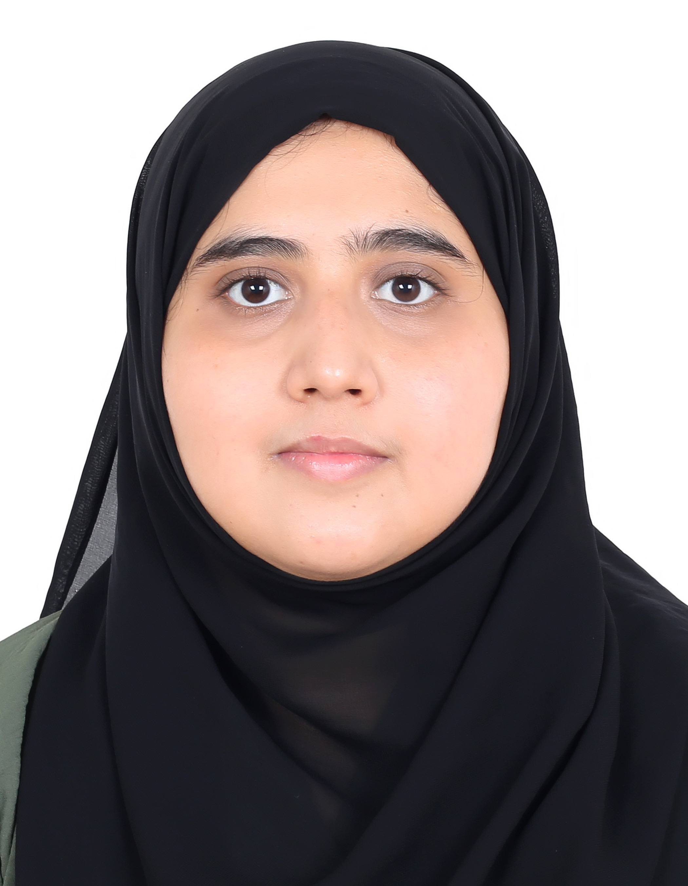

Mafara Sayed

Summary
Qualified Computer Science Engineer seeking a challenging career to provide the best of my
technical, analytical & professional skills to effectively contribute to growth of an organisation.
Education
- B.E in Computer Science (2010-2014), From Vishweshraiya Technological University, Belgaum, India. Secured First class with
distinction (74.9%).
Work Experience
- Organisation: Trekbin, Bangalore.
[Duration: Jan 2017-jun2017]
- Completed 3 Projects from Salesforce Trailhead modules.
- Develop and create customized reports and dashboards.
- Keeping abreast of new Salesforce features and functionality and providing recommendations
For process improvements.
- Daily administration and support of CASES’ Sales force database including but not limited to
managing multiple user setup, profiles and roles, customization of objects, fields, record types,
page layouts and validations
Skills
- Operating System: Windows 10, Windows server 2012 R2, LINUX.
- Languages: C, C++, My SQL, C#, PHP, HTML5/CSS, Java Script, ASP.NET (MVC 5), Java, Shell
scripting.
- Databases: MS SQL Server, MySQL, IIS, Apache.
- Applications: MS Office (Word, Excel, PowerPoint, Outlook), Android Application
Development, Web Application Development, CRM.
Awards and Certificates
- Certification from Salesforce Trailhead through Adya Trekbin Program.
- Certified C# and ASP.net developer (MVC 5) from NIIT, Mangalore
Others